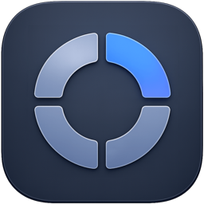

鼠标位置呼出
Hub 会出现在指针位置，减少视线和鼠标来回移动，适合频繁切换应用和打开资料。

PopDeckNative macOS launcher
PopDeck 是一个轻量的 macOS 菜单栏启动器。按下快捷键，在鼠标位置打开应用、文件夹、文件和网页。
v0.1.5 · macOS 14+ · 开源 · 支持自动更新
Features
Hub 会出现在指针位置，减少视线和鼠标来回移动，适合频繁切换应用和打开资料。
应用、文件夹、文件和 URL 都可以加入。拖动排序、移除和恢复默认布局都在设置里完成。
没有 Dock 图标干扰，支持开机启动。需要用时呼出，不需要时安静待在菜单栏。
新版本发布后，PopDeck 可以直接检查、下载、替换并重启，不需要反复去 GitHub 找安装包。
Wall
留下你对 PopDeck 的想法，或者看看别人希望它接下来变成什么样。
这个小工具就应该这样，呼出来、点一下、继续工作。
早期用户比 Dock 和启动台更快，尤其适合经常开文件夹的人。
macOS user自动更新已经跑通，下载体验也比 GitHub 页面清楚多了。
Tester希望后面能有更多图标样式和应用切换器能力。
Feedback菜单栏常驻、不打扰，这点很舒服。
PopDeck friend如果后面能同步不同 Mac 的配置就更好了。
Idea快捷键呼出的位置很关键，现在这个方向是对的。
Power user希望官网以后也能直接显示最新版本号和更新状态。
Launch note这个 Hub 如果能按不同场景切换配置，会很适合工作流。
Workflow喜欢这种不占 Dock 的小工具，安静但好用。
Menu bar fan如果能支持快速搜索应用，就可以替代更多启动器了。
Search idea下载按钮直接给 DMG，这比 GitHub Release 清楚很多。
Website feedbackHub 的透明质感很适合 macOS 桌面。
Design note希望以后可以导入导出配置，重装系统也不用重新摆。
Backup自动更新成功之后，信心一下就上来了。
Release test一眼能看懂这个 App 是做什么的，官网方向对了。
Landing page可以考虑加一个“最近打开”区域。
Feature request如果 Command Tab 那块要做，建议单独一个模式，不要混在 Hub 里。
Power user希望图标大小和 Hub 尺寸以后能更细地调。
Customization菜单栏图标很低调，这点挺符合工具属性。
Small detail